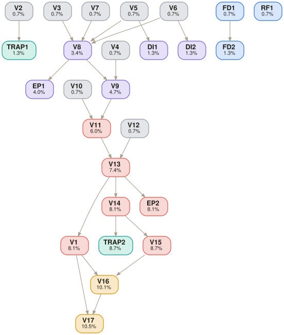

DOCX — 1-page COO decision memo with exactly 5 sections
Python (pandas for XLSX), PDF reader (maintenance logs, capex notes, supervisor notes)
Strictly closed — 5 internal files only, no external sources
[SME to confirm — must be timed on actual task completion]
13-1111.00 — Management Analysts (verified via O*NET OnLine)
Reference files (inputs shown to the model)
| Plant_Performance_Dashboard_Q2.xlsx | Exec Summary (CNC=91.2% util, HT=82.2%), Cycle Time Master (HT=240min/400 parts), Process Utilization, Line Output Weekly, Capex Justification. TRAP: Dashboard shows CNC as bottleneck. |
| HeatTreat_Maintenance_and_Cycle_Log.pdf | Furnace overview (120 hrs/wk planned, 25 batches, 6% shared), Weekly Availability (downtime by week), Warm-Up Losses (hidden from dashboard), Cycle Interruptions, Shift Engineer Remarks. |
| Quality_Rework_and_Scrap_Register.xlsx | FPY by Process (HT=95.6%), Rework Loop Detail (310 units/wk post-HT), Scrap by Defect Code, Post-HT Distortion (3.8-4.5%), Batch Rejection Summary, Inspection Holds. |
| COO_Capex_Note_and_Customer_Penalty_Tracker.pdf | Proposed CNC business case (claims +1600/wk uplift, post-capex=15600/wk), penalty tracker. Footnote: downstream losses assumed stable. |
| Shift_Supervisor_Daily_Notes.pdf | Weekly notes confirming HT as operational constraint: highest queue near HT, HT batch losses, suggestions for tighter release into HT. |
Task prompt — delivered verbatim to the model
Embedded cognitive trap · not shown to the model
Golden trajectory · expert-authored deterministic reasoning path
5 subtasks, 19 analytical steps (compressed here). Progressive constraint discovery across 5 files: headline utilization → hidden furnace losses → effective capacity ceiling → capex rejection → DBR redesign.
Recognize that the dashboard’s CNC bottleneck diagnosis is wrong.
Compute actual heat-treat capacity after three categories of hidden losses.
Apply sharing deduction and heat-treat yield to get true good-output ceiling.
Demonstrate that CNC capex adds capacity above a non-binding constraint.
Design the TOC operating logic and produce the 1-page COO memo.
Golden deliverable · the expert-level output that follows the trajectory
1-page DOCX COO decision memo. 5 sections:
Section 1 — Executive Recommendation: REJECT (defer) the second CNC cell. The true system constraint is the heat-treat furnace, not CNC machining. Additional CNC capacity will inflate WIP without improving shipments.
Section 2 — True Constraint Diagnosis: HT-02 is the actual bottleneck. Dashboard shows CNC at 91.2% utilization, but utilization ≠ constraint under TOC. Effective furnace capacity (~8,684 good parts/wk) is below CNC capacity (10,800/wk). Three hidden loss categories (downtime 17.2 hrs, restart 4.2 hrs, reload 2.0 hrs) reduce furnace time from 120 to ~96.6 hrs/wk.
Section 3 — Effective Capacity Build: Nominal furnace: 10,000/wk. After downtime: ~9,661. After 6% sharing: ~9,081. After 95.6% FPY: ~8,684 good parts/wk. CNC nominal: 10,800/wk (already exceeds system limit). Proposed post-capex CNC: 15,600/wk (irrelevant — system capped at ~8,684).
Section 4 — DBR Redesign: Drum = HT-02 (all production paced to furnace-effective throughput). Buffer = protective time buffer before heat treatment (target: 4–6 hours of WIP). Rope = upstream CNC and machining release gated by furnace consumption rate, not local utilization targets.
Section 5 — Operational Impact: Current shipments: ~8,270/wk. With DBR + HT exploitation: target 8,500–8,700/wk (recovering ~250–450 units from reduced restart loss and tighter scheduling). WIP reduction: 15–25% (eliminating pre-HT queue buildup). Customer service: dispatch reliability improves as production release matches true system pace.
Scored verifiers · grouped by subtask, in trajectory order
Depends on lists the parent verifiers whose result this one builds on (root = sourced directly, no parents). DAG is the verifier's weight. Hover a result mark for the SME's justification.
| ID | Criterion | Depends on | DAG | R1 | R2 | R3 |
|---|---|---|---|---|---|---|
| V2 | Does NOT identify CNC Machining as the true bottleneck | root | 0.7% | ✓ | ✓ | ✓ |
| TRAP1 | Rejects dashboard utilization (CNC=91.2%) as constraint indicator; recognizes utilization ≠ constraint under TOC | V2 | 1.3% | ✓ | ✓ | ✓ |
| ID | Criterion | Depends on | DAG | R1 | R2 | R3 |
|---|---|---|---|---|---|---|
| V3 | Uses planned furnace time of 120 hours per week | root | 0.7% | ✓ | ✗ | ✓ |
| V4 | Uses standard heat-treat cycle of 240 minutes per 400 parts | root | 0.7% | ✓ | ✓ | ✓ |
| V5 | Includes average weekly furnace downtime of ~17.2 hours | root | 0.7% | ✓ | ✓ | ✓ |
| V6 | Includes average weekly warm-up and stabilization loss of ~4.2 hours | root | 0.7% | ✓ | ✓ | ✓ |
| V7 | Includes average weekly interruption and reload delay of ~2.0 hours | root | 0.7% | ✓ | ✓ | ✓ |
| DI1 | Downtime correctly averaged from 6 weekly readings (14,18,21,16,19,15 hrs) | V5 | 1.3% | ✓ | ✓ | ✓ |
| DI2 | Restart stabilization loss identified from Warm-Up section (hidden from dashboard standard) | V6 | 1.3% | ✓ | ✓ | ✓ |
| V8 | Effective furnace time = 95.5–97.5 hours per week | V3V5V6V7 | 3.4% | ✗ | ✗ | ✗ |
| EP1 | Chained subtraction arithmetic: 120 − 17.17 − 4.22 − 2.0 = 96.61 hrs (±1 hr) | V8 | 4.0% | ✗ | ✗ | ✗ |
| ID | Criterion | Depends on | DAG | R1 | R2 | R3 |
|---|---|---|---|---|---|---|
| V9 | Gross effective furnace capacity = 9,550–9,750 parts/week | V8V4 | 4.7% | ✗ | ✗ | ✗ |
| V10 | Applies shared capacity deduction of 6% | root | 0.7% | ✓ | ✗ | ✗ |
| V11 | Bracket-dedicated effective capacity = 8,950–9,150 parts/week | V9V10 | 6.0% | ✗ | ✗ | ✗ |
| V12 | Applies heat-treat first-pass yield of 95.6% | root | 0.7% | ✓ | ✓ | ✓ |
| V13 | Good output ceiling = 8,580–8,780 good parts/week | V11V12 | 7.4% | ✓ | ✓ | ✓ |
| V1 | Identifies Heat Treat Furnace HT-02 as the true bottleneck | V13 | 8.1% | ✓ | ✓ | ✓ |
| EP2 | Calculated ceiling cross-validated against actual shipments (8,150–8,380/wk) | V13 | 8.1% | ✓ | ✓ | ✓ |
| ID | Criterion | Depends on | DAG | R1 | R2 | R3 |
|---|---|---|---|---|---|---|
| V14 | States that current CNC capacity (10,800/wk) already exceeds system limit (~8,684/wk) | V13 | 8.1% | ✓ | ✓ | ✓ |
| V15 | Rejects claimed 1,600 parts/wk shipment uplift from CNC capex | V14 | 8.7% | ✓ | ✓ | ✓ |
| V16 | Recommends deferring/rejecting immediate approval of second CNC cell | V15V1 | 10.1% | ✓ | ✓ | ✓ |
| TRAP2 | Recognizes CNC capex adds capacity above a non-binding constraint (will inflate WIP, not shipments) | V14 | 8.7% | ✓ | ✓ | ✓ |
| ID | Criterion | Depends on | DAG | R1 | R2 | R3 |
|---|---|---|---|---|---|---|
| V17 | Recommends TOC/DBR action focused on Heat Treat: drum=HT-02, buffer before HT, rope=upstream release paced to furnace | V1V16 | 10.5% | ✓ | ✓ | ✓ |
| FD1 | Output is a 1-page COO decision memo (DOCX) | root | 0.7% | ✓ | ✓ | ✓ |
| FD2 | Memo has exactly 5 sections: exec recommendation, constraint diagnosis, capacity build, DBR redesign, operational impact | FD1 | 1.3% | ✓ | ✓ | ✓ |
| RF1 | All analysis from 5 provided internal files only; no external sources | root | 0.7% | ✓ | ✓ | ✓ |
Verifier dependency graph · DAG weights shown on each node
Edges run parent → child. Deeper nodes carry more weight; root checks gate the chains above them.

Files
Model output — one folder per run
Response 1 is the best because it is the only one that explicitly anchors all three arithmetic inputs - the 120 hrs/week planned baseline (V3), the 240 min/400-part batch cycle (V4), and the 6% sharing deduction applied correctly against parts output (V10) giving a reviewer a fully auditable calculation chain. It also delivers constraint diagnosis (citing the capex note's own footnote admission against itself), a three-zone buffer monitoring protocol (Green/Yellow/Red) with a rope release rate in units/day, and the clearest articulation that extra CNC output inflates WIP without touching shipments.
tsk_8717359545 · 26 verifiers